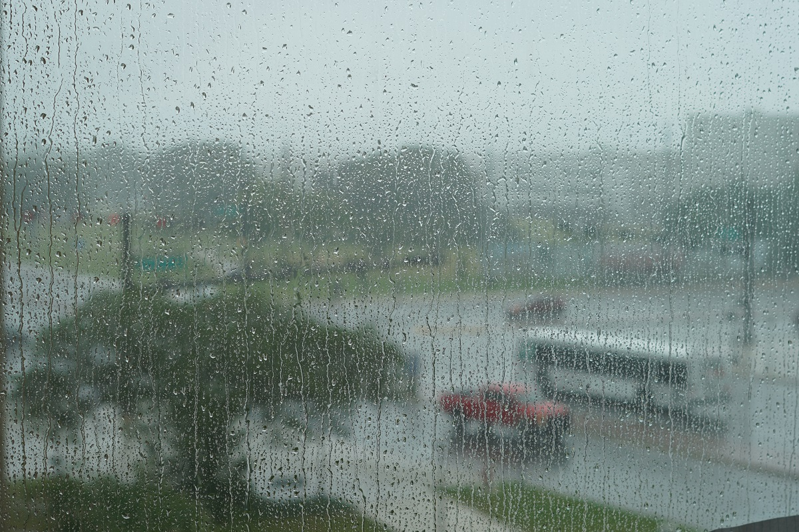
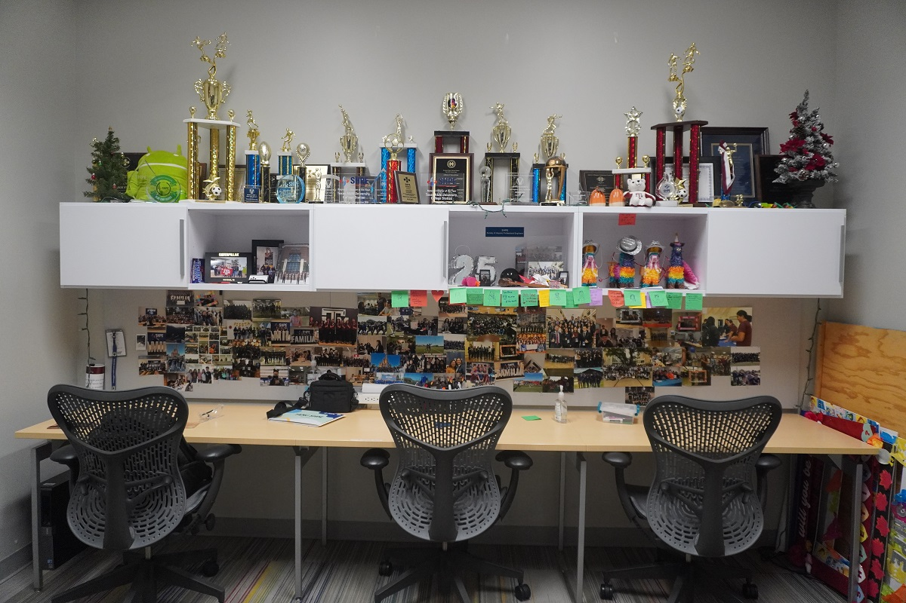
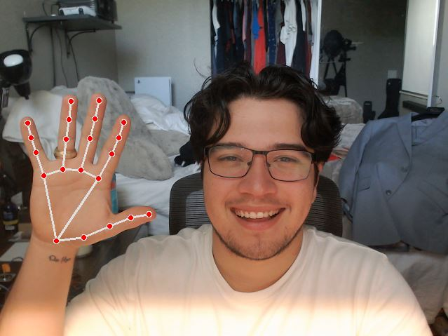

It was honestly one of the more productive and greater days I have had so far on this journey. I was able to finally start one of my personal projects and I had the chance to see Ana order her aggie ring. I truly hope I can make it back whenever it gets placed on her hand.
Along with that, I visited the Fischer Engineering Design Center (FEDC) at the Zachry Engineering complex. I have not been back there in a while, but I needed to go to fill out some paper work to be able to use the facility while I am in town. As I was there, I got to speak to the head of the facility about opening up the area for a maker space. I think doing so would provide students with opportunities to grow in the entreprenuership realm and better learn how to use some of the machinery within the facility which will make them better engineers.
Tomorrow I will be going to Houston to pick up a 3D printer and meeting with some of my close friends who I dearly miss. I am beyond excited for it.
Gambit
In visiting the FEDC, I got to see the last version of the chessboard that was presented during the Senior Design showcase. For the first time in a while, I booted her up and was even more disatisfied with it than I previously was. I found that the system was making sounds that I did not find appealing, the rats nest of wires that surrounded the arduino powering it was worse than I remember, and the gantry kept getting jammed.
Gambit: Prototype 1I know I will need to deconstruct it in the coming weeks to enhance it, and I am not looking forward to it. Reason being is that who knows if it will ever work again. But if it does. Boy will I be happy.
SHPE
I did not do any SHPE work today. However as I was leaving the FEDC, I was greeted by a wave of pouring water. I drive a motorcycle so there was no way I would be getting home while the water was dropping.
 Rain Rain Go AwayWith the rain keeping me within Zachry, I thought I would go and visit my home away from home. The SHPE office. It was the first time I have come to the office not being an officer and truthfully it was kind of sad. The memories that fill the walls definetely brought on emotions I was not ready for.
 My old homeAggie Traditions
Earning a aggie ring is something that is held near and dear to the hearts of aggies. You must earn 90 credits with atleast 45 being from Texas A&M University. Today, Ana was able to order her aggie ring. I am beyond proud of her and her journey being a first generation student who is on track to become a doctor. I know she will continue to impact everyone she meets and I am grateful to have her in my life.
Ordering her Aggie RingI can't wait to see the aggie gold meet your hand on September 23rd. I truly hope I can join you on your day. Keep making me and your family proud.
Sign Language Trainer
One of my cousins is deaf. Since knowing her, I have never truly been able to communicate with her without having a piece of paper nearby or relying on her ability to read lips. This fall, I will be attending the SHPE National Convention in Charlotte, North Carolina where my cousin so happens to reside.
This project aims to encourage users to learn sign language and constantly test their abilities. If you have never used monkeytype, it is a website that tests your typing speeds. This project will be something similar in the sense that it will test your sign language speeds.
Today I was able to get the project started in learning how to actively track hand gestures using Python. It was nowhere as difficult as I thought it would be, but I know the challenges and issues will lie ahead.
 Hand Gesture CaptureI truly hope I can see this project to the end and ultimately get to better communicate with my cousin and anyone within the deaf community.
Habit Tracking
Today, I journaled, worked out, read, tracked my caloric intake, and worked on at least one of my personal projects. Today was a good day.
What I am thankful for
I am thankful for Texas A&M. You have brought people into my life that I know will continue to impact me each and every single day.
It always seems impossible until it's done. Do More. - J.D.